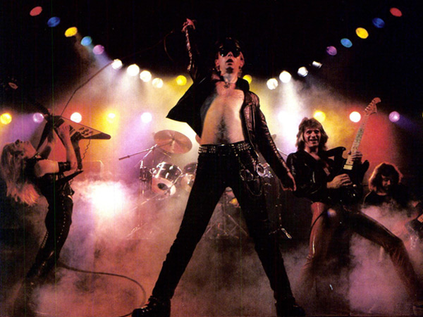
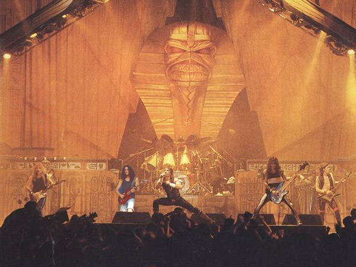
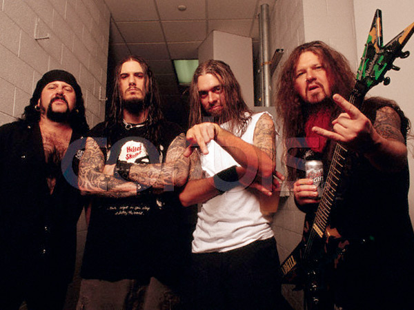

Unlike the creation of, well, creation, which (allegedly) only took six days, Heavy Metal took a slightly longer bath in the primordial stew before making it's grand entrance onto the world stage.
For the sake of brevity, we begin our journey in the 1960's.
The early half of the decade witnessed an unparalled explosion of popular music.
Vanguard acts, such as The Beatles (I Wanna Hold Your Hand), The Rolling Stones (Paint It Black), The Who (My Generation), and The Kinks (You Really Got Me), emerged as the "third generation" of rock and roll (behind the blues originators and the Elvis Presely/Little Richard generation).
Each of these groups contributed to the creation the "rock band" archetype: loud, unpredictable, rebellious, and even dangerous.
By the latter half of the 1960's, the next generation of "rock stars" began to sow first seeds of protypical Heavy Metal.
Drawing inspiration from their blues and rock and roll forebearers, "hard rock" acts, like Cream (Tales of Brave Ulysses), Led Zeppelin (Communication Breakdown), and The Jimi Hendrix Experience (Voodoo Child), provided the soundtrack for a generation increasing disaffected by social injustice and the escalating war in Vietnam.
What differentiated these acts from their predecessors was technological advances that enabled new heights in sonic disruption (Blue Cheer - Summertime Blues).
These acts were markedly louder not only in volume, but in weaving of brutally blunt social commentary into their lyrics. Heavy Metal began to take shape...

England, this collection of bands earned the moniker the “New Wave of British Heavy Metal,” a play on the name bestowed to the “new wave” sensation in the pop charts.
Vanguard acts like Iron Maiden (Hallowed Be Thy Name), Motörhead (Iron Fist), Saxon (Machine Gun), and Diamond Head (Am I Evil?) developed a distinctly new brand of heavy metal.
Although heavily inspired by the founding heavy metal bands, the music of these new acts effectively eliminated influence of the blues, instead incorporating elements of late 1970s British punk.
The result was a faster and aggressively bombastic sound. Lyrical, the NWOBHM bands ventured into new territory. Songs explored the realms of fantasy and mythology (Rime of the Ancient Mariner), yet also maintained the social ire of their predecessors.
Building on this creative exploration, the NWOBHM bands, especially Iron Maiden, embarked on creating elaborate, theatrical stage shows that thematically complimented their music (Powerslave).
These newly explored elements resonated with fans beyond England. By the mid-1980's, heavy metal experienced acceptance and popularity in mainland Europe, North America and South America.

Heavy metal had reached a crossroads by the early 1990s.
The novelty of hair metal vanished as quickly as it burst onto the scene. Thrash remained too extreme for mainstream audiences. Some thrash bands, most notably Metallica (Enter Sandman) and Megadeth (Symphony of Destruction), successfully experimented with a streamlined and commercially palatable direction.
This move was a reaction to the rapidly growing popularity of Grunge (more on that in a minute).This broad subgenre represented the traditional conventions of metal taken to every conceivable extreme: severely detuned guitars, guttural vocals, unimaginably fast tempos, and radically taboo lyrical content. Extreme metal (which included Black [Immortal - Pure Holocaust] and Death [Death - Flattening of Emotions] metal) attracted limited, but intensely dedicated, audiences that wanted to explore the possibilities beholden in metal. A simplified or streamlined approach did not satisfy such listeners. No compromise: take it or leave it. Quite simply, the masses opted to leave it.